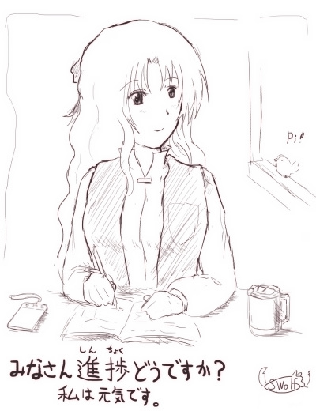

シルバーセカンド開発日誌
2018年01月
■
2018-01-27 (土) 落書き回（単色1枚）▼
今週は『片道勇者2』用の技術的な基礎部分の実装やら何やらで
特にゲーム情報的にお知らせできることがないので、
落書きを1枚置いておきます！
開発日誌のマスコット、ラッシー

気がつけば1月もそろそろ終わりです。
来週あたり、（ネタがないので）今月に
何をやっていたかをまとめてご報告しようと思います。
今は『片道勇者2』はまだ基本システム周りをいじっていて、
プレイヤーさんのサポート処理（妖精アドバイス）やら、
いま作っておかないと最後まで作らないであろう
デバッグ処理周りの強化につとめています。
少し後になってしまうと「どうせこれが最後のバグかもしれないし……」と思って、
便利なデバッグ関連処理を実装しないまま
延々と2年くらいバグ修正を続けるハメになりますからね！
特にローグライクは状況依存のバグが多すぎて困ります。
そして前回申し上げた通り、アルファは「5周くらい遊べるもの」を目指して、
基本システムは一通り実装、画像は仮、データはそこそこ、
あたりを公開の目標としています。
一通りのシステムができあがったら、いくらかデータを追加して、
まず一回内々の人に見てもらって、問題があるところは直して、
それからアルファ版を開発日誌あたりで
期間限定で公開しようと思っておりますので、もう少々お待ち下さい。■
2018-01-20 (土) 片道勇者2 【12】 ボツになった特徴効果▼
実はもうボツになった話なんですが、
『片道勇者2』では攻撃力や回避率＋などの「特徴」を「重ねて取った」ときの効果を、
前作から少し工夫しようか、どうしようか、と考えていました。
※特徴：ゲームスタート時のキャラメイク時に取れる追加の特性。
基本的に少し強くなる。
たとえば「攻撃力＋」の2つめを取ると、1つめと同じ効果「攻撃力が１増加」でなく
「攻撃力を成長させやすくなる」という効果を得られるようにする、といった形です。
これにより、一定レベルごとに必ず「攻撃力」を成長させられる選択肢が
出るようにするのはどうかな、と考えていました。
なぜこう考えたかというと、今作は1点分のパラメータの効果がかなり大きいためです。
なので増加分を将来に散らすことで、5つ重ねによる
スタート時のパラメータの「とんでもなさ」を多少緩和できるかなと考えました。
【こうするとどう変わる？】
前作通りだと、「攻撃力＋」を5つ取れば最初に最大5ポイント分、
初期パラメータを増やせる感じになるはずですが、
この形だと、何個「攻撃力＋」を取ってもスタート時には最大+1しか上がらないので
序盤にはさほど影響を与えないようになります。
その一方、「定期的に成長チャンスがめぐってくる」形になるので、性能的には
より長期戦向きになります。
たとえば海賊で「カリスマ（前作の「魅力」に相当）」を2つ積みにして
恒久的にジワジワ「カリスマ」を上げられるようにして
弱点を補うようなプレイが可能になるのです。
……が、ここまで考えてなんだか面白くない気がしたので、
今ではこの案はボツになりました。
理由は以下の2点です。
●弱点を恒久的に補強できるといっても感触が地味な上に、
クラス固有のゲームの面白みを削ぐ可能性がある。
→ せっかく全てのクラスに個性を付けても、弱点を持たない程度に
平均的に調整されてしまう問題が出てしまいます。
たとえば攻撃力を上げた理術士が肉弾戦プレイだけで解決してしまったりするわけで、
全てのクラスでプレイ感がおおよそ似てしまう危険性があるのです。
それは開発側としてはちょっと望まないことでした。
●最初に一個のパラメータをガン上げできる方が「試してる感」があって楽しい！
→ どんなに重ねても1点しか増えないのに比べると、
前作の「筋力＋」5つ積みは高い攻撃力を味わえて爽快でした。
「スタート時から変化が出せる」というのは色々と試す快感を味わいやすくて、
初めての人ほどこの体験が必要だと感じます。
そんなわけで、この「同じ特徴を取ったとき、2つめ以降だと
能力が上がる代わりに成長率だけアップする」という効果は、
ひとまずボツになりました。
【結局どうなった？】
結局、1点分の効果が重いことによる「5つ重ねにしたときのとんでもなさ」は、
「同じ特徴は最大3つまでしか取れない」という制約を設けて
カバーしようかなと考え中です。
こうすれば、仮に私が「取れば取るほど有利になる特徴」を作ってしまったとしても、
5つ中の残り2つに何を入れるか考える余地は生まれるので
完全なる無思考にはなりにくいはずです。
また、前作のデータを確認した限りだと、「特徴」の攻撃力補正バランスは
●クラス「剣士」や「勇者」が「筋力＋」の特徴を5つ重ねにした場合は
攻撃力がだいたい初期値の1.5倍近くになる。（攻撃29→41）
●最弱クラス「観光客」だと「筋力＋」5つ重ねで
攻撃力が初期値の2倍近くになる。（攻撃17→32）
というくらいでした。これに合わせる感じで今作に当てはめるなら、
・攻撃高めのクラスの初期値が攻撃力5点～6点で、
そこに+3すると【1.5倍～1.6倍】になる。
・攻撃最弱クラスの初期値が攻撃力3点で、そこに＋3すると【2倍】になる。
という程度のバランスを狙えば、能力値上昇を＋3アップまでにしても
前作の「5つ重ね」の快感と似た味を引き継ぐことができるのではと考えています。
それでいてあと2つも追加で特徴が取れるようになるので、
選び方が単調になりにくくなる期待もあります！
で、「よし！ とりあえずこれで行くか！」となったのが数日前の出来事です。
……という感じで、こんな風に仕様があっちにいったりこっちに来たりしつつ、
面白みを求めてフラフラしながら今日も開発を続けています。
【アルファ版の目標設定！】
アルファが近くなってきたような気がする今、
新たにアルファ公開に向けての基準を一つ設けることにしました。
それは、
●5周分くらいは遊べる内容にしたものをアルファ1としてリリースする。
です！ つまり、実際に判断を楽しめる程度に少しはデータを揃えておいて、
5回分くらいは楽しく試せる感じにしたところまでを作ってお見せしたいと思います。
というのも、ただの「動作見本」と言えるラインまでは
十分にたどり着いているんですが、
少しやってみてもらったところで「面白くなる？のかな？」
くらいしか感想が出なかったので、
いくらかの新しい面白みや期待感を感じられる程度には
色々実装してからリリースしようと考え直した次第です。
特に、貴重な初回プレイユーザ様を消費するとなったら、
チュートリアルの善し悪しも見られるチャンスなので、
仮でもチュートリアル周りをいくらか充実させておきたいと考えています。
何よりちょっとの面白さの刺激があれば、
「もしかしてこういう案も面白いんじゃね？」という
ご意見をいただける確率もきっと上がるでしょうし、
多くの人にとって「ここすごい嫌いだー！！」という場所も掴めるでしょうから、
今後新たなデータを作っていく上で色々な知見を得られるはずです。
どのみち開発自体はずっと同じペースで続けており、
単に「いつ一回目を見せるか」という問題でしかないので、
せっかくやるなら効果的なタイミングでお見せしたいと思っています。
そんなわけで、今日も今日とてマイペースに『片道勇者2』の開発を続行中です。■
2018-01-13 (土) 電子書籍のサポート▼【電子書籍のサポートやサイト修正】
今週はサイトの修正や電子書籍周りのサポート対応、
セール終了の準備などで大半の時間を使った一週間となりました。
電子書籍の件ですが、前々から告知させていただいている通り、
『片道勇者開発記』の「ゲーム版」のほうは
セールが終わった時点、早ければ1/15には販売を一時停止します。
もし欲しい方がいらっしゃいましたらお早めに！
「ゲーム版」の販売が止まっても、「Kindle版」は継続して販売されます。
【そしてKindle書籍のサポート】

実は、Kindle版の『片道勇者開発記』などを
「Page Flip」というKindleアプリ固有の機能が働く端末（タブレットなど）で見ると
どうやら設定されているスタイルシート（デザインを決めるデータ）の読み込みが
無効になってしまうらしく、どの文字が項目タイトルなのかも
分かりづらくなってしまうという辛い状況になってしまっていました。
そんなわけでKindle版のデータを一度全部作り直してアップしたり
うまく表示されるよう色々試したりしていたのが今週の主な仕事です。
手元のiPadで見た感じだと、ひとまず『片道勇者開発記』も
『ゲーム開発者の地図』も期待通りに出るようになりました。
最新のKindleアプリならファイルが自動更新されるようになっているので、
読みにくかったなあとお思いだった方にもそのうち最新版が配信されると思います。
ご迷惑をお掛けしてしまって申し訳ございません。
【ゲーム開発者の地図 公式ページ！】
あまり必要なさそうかなとも思いつつ、
『ゲーム開発者の地図』の公式ページを作成しました！
新しくサイトにいらしてくださった方に、いちおうの主流作品の一つとして
ご紹介する目的で並べております。
【ゲーム開発者の地図 公式ページ】
「電子書籍」は作ってから出すまでのスパンが比較的短く、
ゲームよりは人生を賭けずに制作コストを回収しやすいので、
今後も何かしら定期的に本を出してもいいかもしれない、と少し考えています。
一方の「ゲーム」の方は、内容自体をシクったり、たまたまものすごく売れなかったり、
値段の付けミスをしただけでも人生が傾くのでヤバい！
主砲としてのゲームと、副砲としての電子書籍、みたいな形で
うまいこと生活の足しにできたらいいんですけれど、
さすがに本のほうは売り方も知名度も初心者レベルなのもあって
今のところバズる（急に話題になる）ほどの気配も特にないので、
ときどきアピールしつつ、売り方も学びつつ、地道にやっていきたいと思います。
読んでくださっている皆さま、感想をくださる皆さまには本当に感謝の限りです！
何か話題性のある本を作れて継続収入になれば
ゲーム開発にも集中しやすくていいんですけれど、
前回の『片道勇者開発記』もどうにもタイミングを逃した感があって、
うまいタイミングや出し方で出すのは自分にとってはまだまだ修行が必要そうです。
とにかく、色々な方面で自分が自然に品質よく作っていけるものを活用して、
継続して生きていくための努力や工夫をしていきたいですね。
当面は主にゲーム開発のターンで、ごくたまに副業もしつつ、
『片道勇者2』の開発にほぼ全てのリソースを投入していきたいと思います。
よければ今後とも、よろしくお願いいたします。 ■
2018-01-06 (土) 片道勇者2 【11】 最低限の地形▼
次回作について語るネタを思いつくのが大変になってきた年始一回目の開発報告！
マップの地形（パーツ）がいろいろできあがってきたので一旦ここでご紹介です！
【現在のマップ 前よりちょっとずつマシになっています（マップチップは仮画像です）】
すごい基本的な話ですが、今のところ存在している
『片道勇者2』のそれぞれのマップチップについてご紹介していきます。
↑平地 ↑山 ↑水地形
【平地】
いつも通りの場所。仮画像はまだベタ塗りですが、
ヘクス形状なだけでちょっと新しさを感じるのがいいですね。
【山】
山の地形、普通のＲＰＧでは通れないことが多いのですが、
『片道勇者』シリーズにおいては「時間をかければ通れる場所」です。
それは2になっても変わりません。
「山」は、前作では侵入に「10ターン」かかる地形でしたが、
今のアルファでは山に侵入するのに「5ターン」かかるよう設定されています。
全体的に、「今作の1ヘクス」は「前作の2～3マス」に相当する感じに調整しています。
その分、1ターンの移動や戦闘の重みも2～3倍に増しています。
なお今の仮マップチップは前作の山チップを拡大しただけのやつです。
前作にもあった山の通過を容易にする特徴「登山マスター」は、
2では他と同様に「カード」扱いにして、
「<パッシブ> 手札にある間だけ、山への侵入ターンが2減る。
山の上にいるとクリティカル率と回避率がアップ（重複可）」
という感じにしようかなと考えています。
たまにしか手札に来ない（あるいは手札に入れるのに「引き直し」しなきゃいけない）のに
侵入ターンが減るだけだとあまりお得感がないですから、
「登山マスターは山で構えると戦闘力が上がるぞ！」
みたいにすれば使ってくれる人も増えるかなと想像中です。
【水地形】
水地形も普通のRPGでは通れないことが多いんですが、
これも山と同様、『片道勇者』シリーズにおいては
「時間がかかるものの通行が可能なマス」となっています。
前作では水地形への侵入に「5ターン」かかりましたが、
今回は1マスや1ターンの重みを2～3倍にしてるので、
2では今のところ侵入にかかるターンは「3ターン」となっています。
（移動「後」の待ち時間が4→2ターンになった）
仮マップチップは今のところベタ塗りですが、
平地チップよりも「高さ」を低くすることで
「立体感が出せそうでなんかすげぇ！」と一人で言っていました。
見てもらった協力者の人から指摘を受けて気付いたのですが、
ヘクスマップは「高低差」を感じさせやすい造りのようなので、
うまくやればその辺でちょっと見栄えがよくなるよう工夫できそうです。
可能な範囲でいろいろ試してみたいですね。
【壁】
マスとマスの間にある壁です。攻撃で破壊することができます。
前作の「壁」と違って単純に1マス使うものじゃないので、
データを管理したり、攻撃のヒット判定をチェックする処理を作るのが地獄でした。
「ヘクスの間にある」という要素が意外な効用をもたらしており、
もし壁を挟んだ隣接マスに誰かいた場合、連続攻撃しすぎると同じターン中に
「壁を壊す」→「その次の攻撃がそのまま壁の向こう側の相手に当たる」ので、
「ダンジョンで壁を破壊すると同時に敵を急襲」したり、
「街にダイナミック侵入（※壁破壊）するときに住人をまちがって
殴ってしまわないように気をつけたりする」ようなプレイができるようになりました。
「うまく使えば有利になるし、何も考えずにやると敵に先制されたり事故が起きる」という感じで
壁越えは頭の使い所になりそうです。
【マップについての今後の展望】
ここまでは前作にもあった要素ですが、
『片道勇者2』ではもう少し「地形」のバリエーションを増やしたいなと
アイデアを考えています。
たとえば、
「森」： 入ると視界制限を受ける＆敵にも見つかりにくくなる。
「沼」： 水地形より少しだけ移動負荷が軽い。これで湿地帯を作れるかも。
「街道」： 上に乗り続けて一定ターン移動していると移動速度が上昇する。
必ず街か迷宮の近くを通る、といったことも技術的にできれば
冒険の目安になって楽しいかも？
といった地形チップを、実装できるかはともかくとしてアイデアだけ考え中です。
もし皆さまが前作を遊んでいて「こういう地形があったら面白いのに」とお思いでしたら、
この機会にぜひ教えてください！
私の腕で使いこなせそうでしたらぜひ導入を検討してみます。
それでは今年も一年、開発に全力で取り組んでいきます！■
2018-01-01 (月) 2018年あけまして！▼
ということでとうとう2018年を迎えることができました。
皆さま、あけましておめでとうございます！
※直近の犬キャラはたぶん『プラネットハウル』よりウォーです。
今年の目標は、
●『片道勇者2』、アルファは当然出す。
●『片道勇者2』のベータまでいけたらいいけど無理はしない。
●その間なんとか生き延びる。
です！ シンプルとはいえゲームを一本作る作業量は膨大なので
展開がどんなテンポになるかは未知数です。
今は世の中にゲームが溢れすぎているので、急いで変なものを出すよりは、
じっくり面白いものを出した方が喜ぶ人も増えるだろうと考えています。
できそうならば、今作は自分で遊んでもずっと遊べそうな一作を目指したいですね！
それでは、今年も一年、よろしくお願いします！
当サイトの有料作品セールも1/14過ぎまでやっていますので、
よければぜひ！2018年01月
Copyright © SmokingWOLF / Silver Second
 カテゴリ: 落書き
カテゴリ: 落書き カテゴリ: 落書き
カテゴリ: 落書き